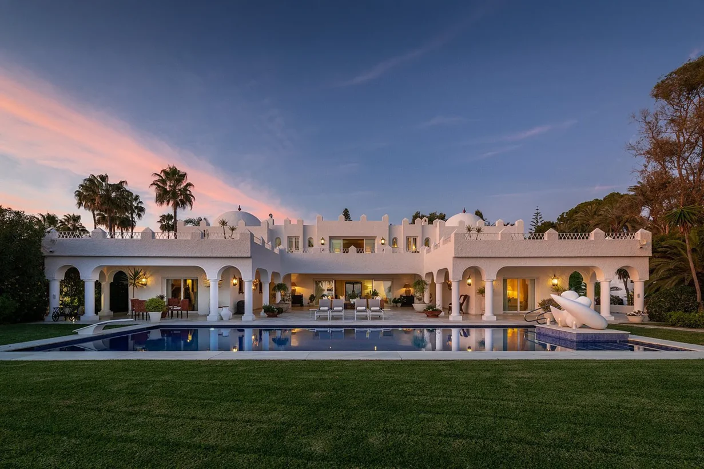
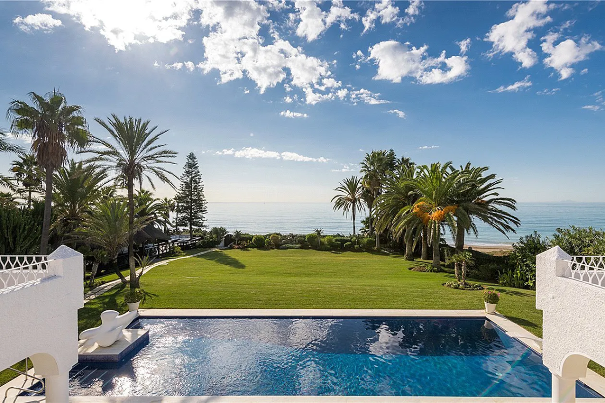
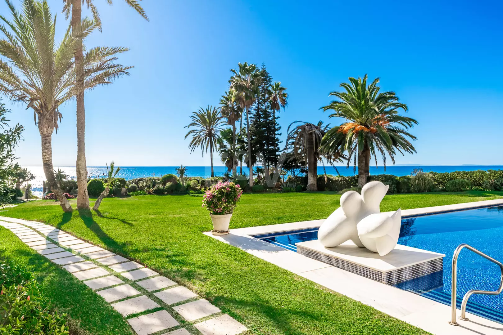
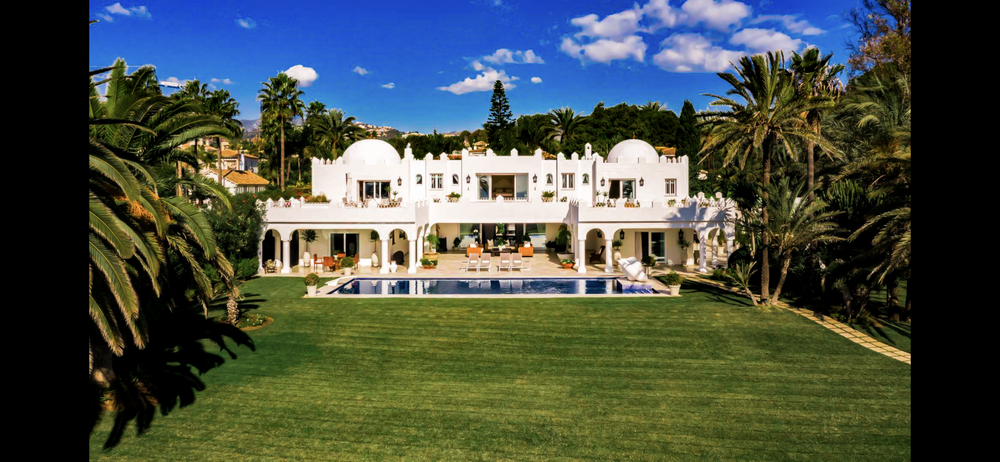
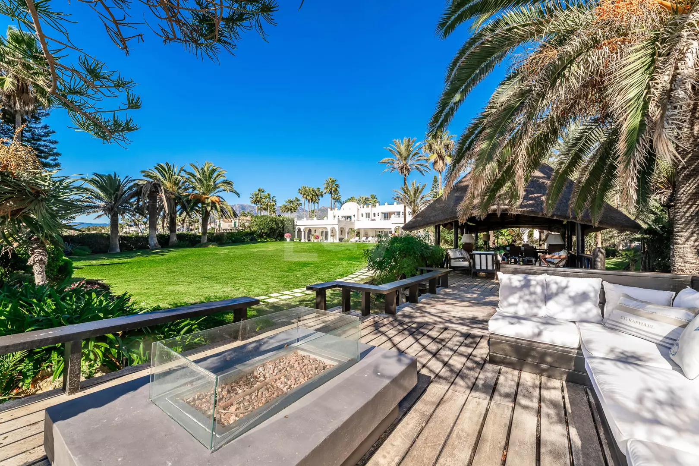
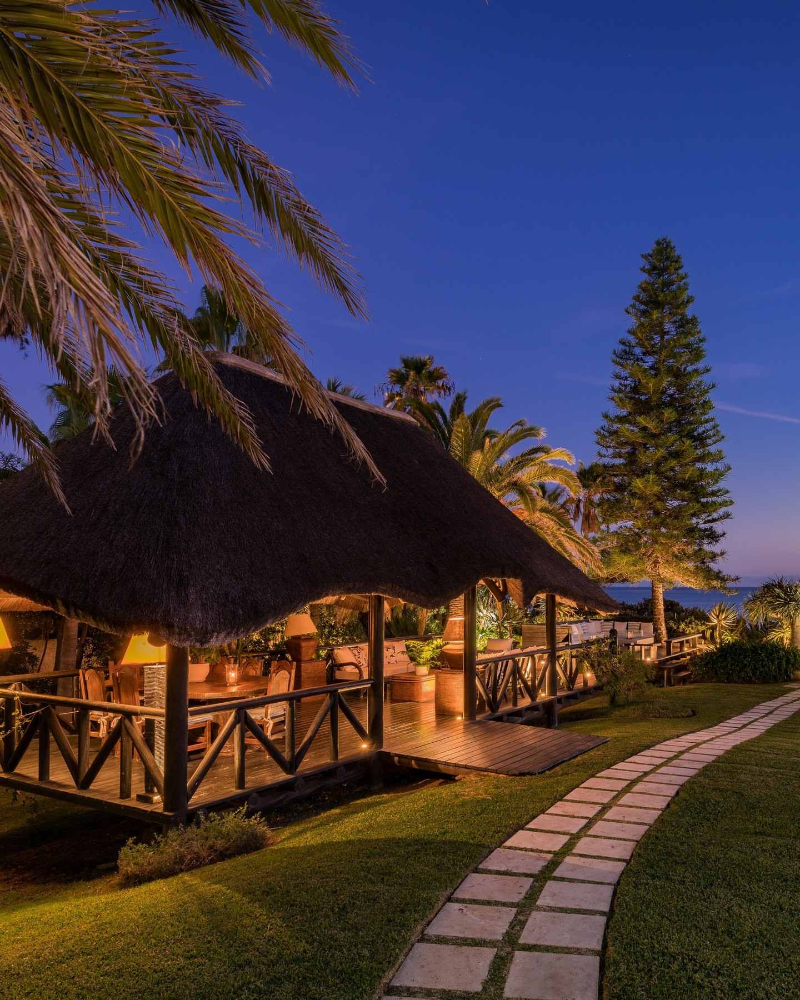
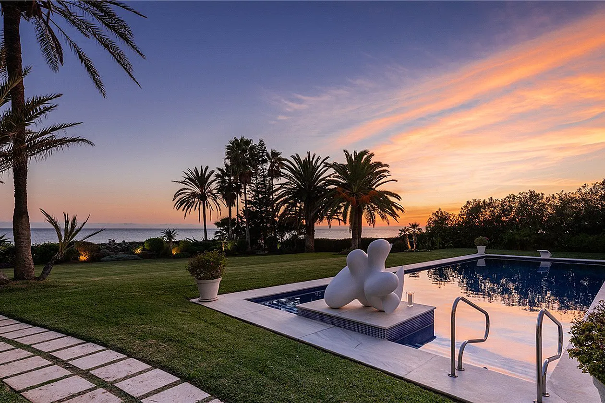
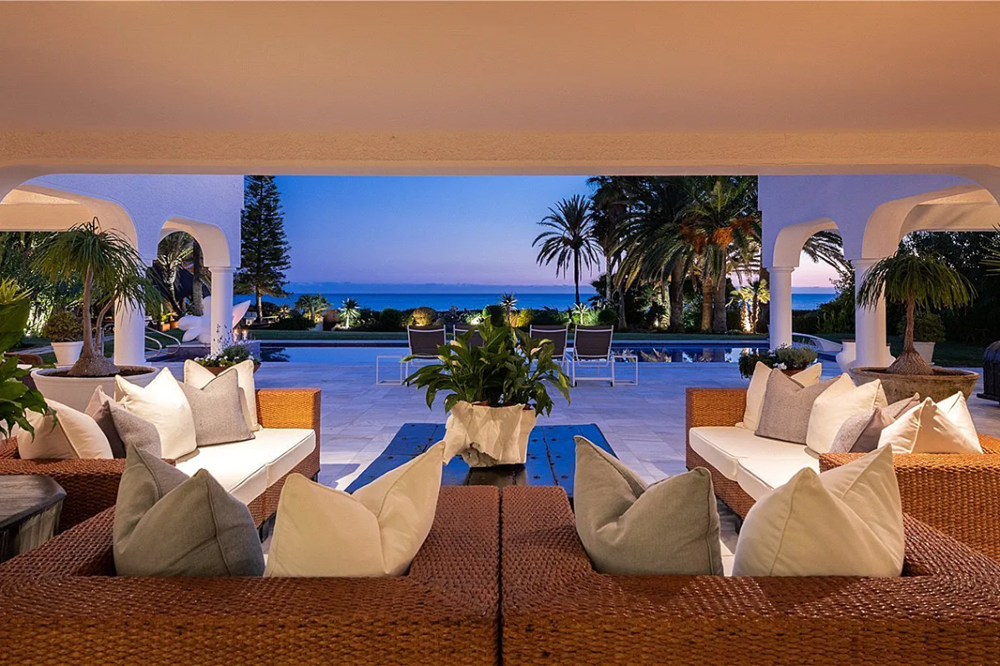

An iconic Moorish-style villa, set on an expansive frontline plot within the most exclusive coastal community in Marbella. No adjacent neighbours on either side. The gardens flow naturally toward the shore.
A spectacular floral courtyard with lámina de agua receives you. From the entrance hall the house opens to wide terraces, manicured gardens and uninterrupted views of the Mediterranean. The principal suite occupies the azotea, with panoramic views toward the Atlas Mountains of Morocco.
"Its position — protected, irreplaceable, frontline — is one that current coastal regulations make impossible to recreate anywhere on this coast."
— Engel & Völkers El Rosario

The GardenManicured grounds flowing naturally to the shore. A floral entrance courtyard with classical lámina de agua — the heart of the Moorish domestic tradition, translated here to the Mediterranean waterfront.

The BeachDirect private access to the beach of Los Monteros — one of the finest natural beaches on the Costa del Sol. A fully equipped chiringuito in absolute first line completes the estate's relationship with the sea.

AzoteaThe principal suite opens onto a rooftop terrace from which the full arc of the Marbella coastline, and on clear days the mountains of Morocco beyond, is laid before you.
Original Andalusian-Arab design enriched with innumerable authentic details — stucco yesería, tiled zócalos, arcos de herradura. Carefully updated with contemporary finishes while preserving the spiritual geometry that defines this place. Air conditioning, underfloor heating, heated pool, 24h security, automated irrigation. The ancient and the precise, side by side.
Constructed in the 1950s for Carmen Franco, daughter of the Spanish Generalísimo Francisco Franco. Acquired a decade later by Aline Griffith — American OSS field operative, New York model, Countess of Romanones — who had been dispatched to wartime Madrid under cover to counter Nazi influence within Spain's neutral ruling élite.
Clad in Balenciaga and passing as an American socialite, with rubies at her neck and a pistol in her bag, she became a glittering star of the international jet set. A fashion icon celebrated as one of the world's best-dressed women — while privately foiling attempts on the King of Morocco's life, and on her own. Country Life described the estate as a place where "glitz, mystery and intrigue are woven into the very fabric of the walls." In 1989 she was inducted into the U.S. Army Military Intelligence Hall of Fame. Her memoir, The Spy Wore Red, was a New York Times bestseller.
Distinguished dignitaries and individuals of great wealth acquired villas surrounding the hotel, and today Los Monteros gives an impression of absolute privacy. Among those neighbours: actor Antonio Banderas, whose property almost touches the sea.



Los Monteros is a fully consolidated urbanisation developed in the 1960s. No additional plots remain for development. The position Villa Annabel occupies — frontline, unobstructed, private — is, by definition of current coastal regulation, irreplaceable on this coast.
| Beach | Direct private access · First line |
| Hotel Los Monteros & Spa | Adjacent |
| Golf | Championship course · minutes away |
| Marbella Centro | 15 minutes east |
| Málaga Airport | ±45 minutes |
| Orientation | South-east · Atlas Mountains views |